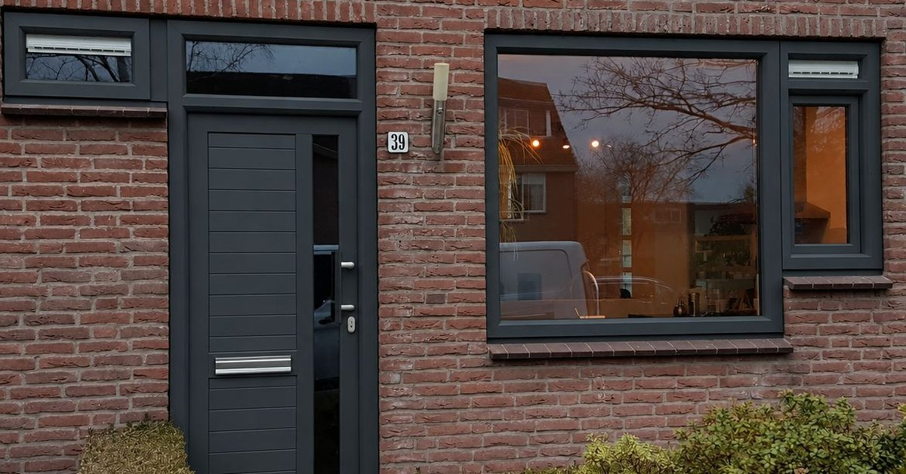
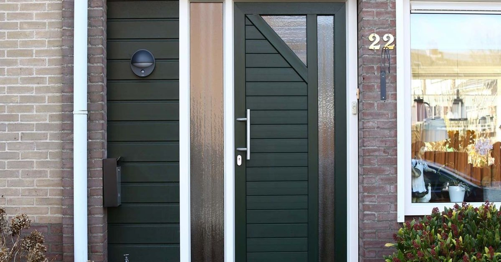
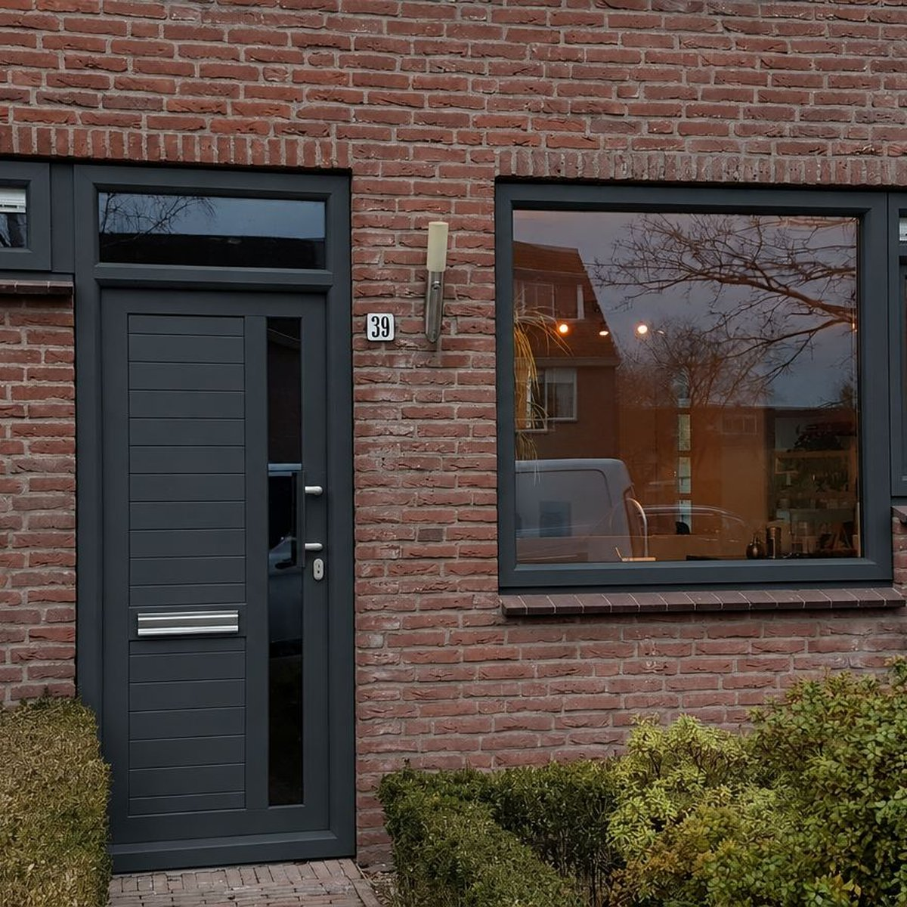
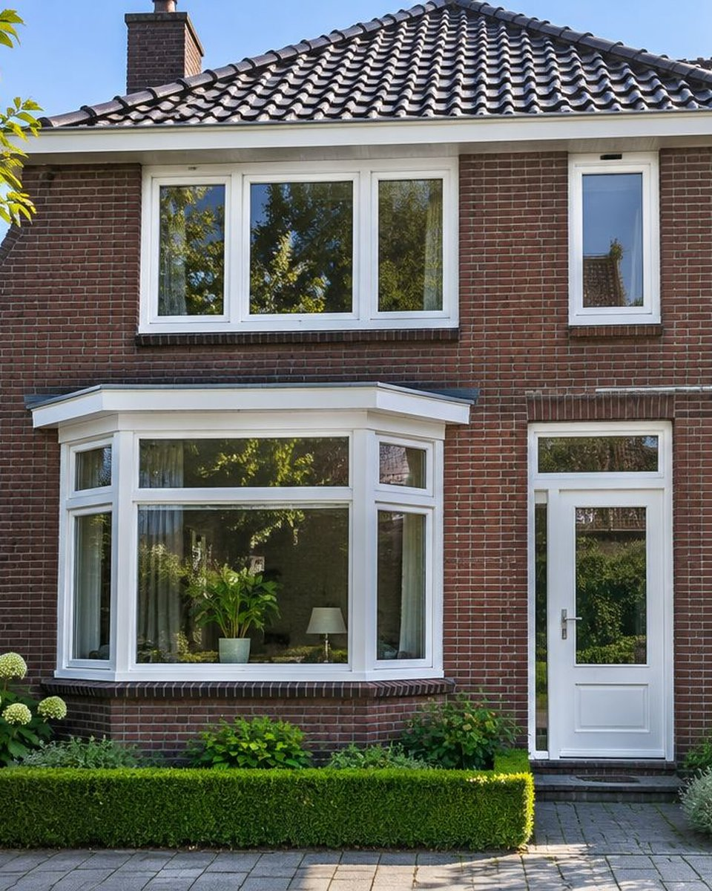

Nieuwe kunststof kozijnen met Vierplus®-glas. Warmer, stiller en nooit meer schilderen. Bereken direct je prijs in 1 minuut, of plan een gratis adviesgesprek bij je thuis.
Bereken direct je prijs in 1 minuut, of plan een gratis adviesgesprek bij je thuis. Kies je kleur, binnen en buiten apart. Montage door ons eigen team. Vanaf € 72,95 p/m.
Bereken direct je prijs, of laat onze adviseur gratis bij je thuis langskomen. Geen tocht, geen houtrot en lagere stookkosten. In termijnen vanaf € 72,95 per maand.
Geen tocht, geen houtrot en lagere stookkosten. In termijnen vanaf € 72,95 per maand. Kunststof met houtnerf en houtlookverbinding: van dichtbij lijkt het hout.
Liever een exacte prijs? Onze adviseur komt gratis langs en meet alles op. Kunststof kozijnen op maat met Vierplus®-glas. Warmer, stiller, nooit meer schilderen.
Kunststof kozijnen op maat met Vierplus®-glas. Warmer, stiller, nooit meer schilderen. Tel je ramen en deuren, kies je kleur en zie direct een richtprijs. Geen gegevens nodig.
Warmer, stiller en lagere stookkosten. In termijnen vanaf € 72,95 per maand. In 2026 tot € 111 per m² glas ISDE-subsidie, vanaf 2027 de helft. Regel het nog dit jaar.
In 2026 tot € 111 per m² glas ISDE-subsidie, vanaf 2027 de helft. Regel het nog dit jaar. Onze adviseur komt gratis langs en kijkt met je mee welke subsidie voor jou geldt.
Kunststof voordeur of achterdeur op maat, met meerpuntssluiting en SKG-beslag. Bereken direct de prijs van je nieuwe deur, eventueel met nieuwe ramen erbij.
Bereken direct de prijs van je nieuwe deur, eventueel met nieuwe ramen erbij. Kies je kleur, binnen en buiten apart. Geplaatst door ons eigen montageteam.
Kies je nu gewoon HR++ of triple, dan moet je straks opnieuw. Doe het in één keer goed. Warmer, stiller en elke maand lagere stookkosten. Bereken direct je prijs.
Warmer, stiller en elke maand lagere stookkosten. Bereken direct je prijs. Gratis adviesgesprek bij je thuis: we laten het glas zien en meten alles op.
Nieuwe kunststof kozijnen met Vierplus®-glas. Warmer, stiller en nooit meer schilderen. Bereken direct je prijs in 1 minuut, of plan een gratis adviesgesprek bij je thuis.
Bereken direct je prijs in 1 minuut, of plan een gratis adviesgesprek bij je thuis. Kies je kleur, binnen en buiten apart. Montage door ons eigen team. Vanaf € 72,95 p/m.
Bereken direct je prijs, of laat onze adviseur gratis bij je thuis langskomen. Geen tocht, geen houtrot en lagere stookkosten. In termijnen vanaf € 72,95 per maand.
Geen tocht, geen houtrot en lagere stookkosten. In termijnen vanaf € 72,95 per maand. Kunststof met houtnerf en houtlookverbinding: van dichtbij lijkt het hout.
Liever een exacte prijs? Onze adviseur komt gratis langs en meet alles op. Kunststof kozijnen op maat met Vierplus®-glas. Warmer, stiller, nooit meer schilderen.
Kunststof kozijnen op maat met Vierplus®-glas. Warmer, stiller, nooit meer schilderen. Tel je ramen en deuren, kies je kleur en zie direct een richtprijs. Geen gegevens nodig.
Warmer, stiller en lagere stookkosten. In termijnen vanaf € 72,95 per maand. In 2026 tot € 111 per m² glas ISDE-subsidie, vanaf 2027 de helft. Regel het nog dit jaar.
In 2026 tot € 111 per m² glas ISDE-subsidie, vanaf 2027 de helft. Regel het nog dit jaar. Onze adviseur komt gratis langs en kijkt met je mee welke subsidie voor jou geldt.
Kunststof voordeur of achterdeur op maat, met meerpuntssluiting en SKG-beslag. Bereken direct de prijs van je nieuwe deur, eventueel met nieuwe ramen erbij.
Bereken direct de prijs van je nieuwe deur, eventueel met nieuwe ramen erbij. Kies je kleur, binnen en buiten apart. Geplaatst door ons eigen montageteam.
Kies je nu gewoon HR++ of triple, dan moet je straks opnieuw. Doe het in één keer goed. Warmer, stiller en elke maand lagere stookkosten. Bereken direct je prijs.
Warmer, stiller en elke maand lagere stookkosten. Bereken direct je prijs. Gratis adviesgesprek bij je thuis: we laten het glas zien en meten alles op.

Nieuwe kozijnen vanaf € 72,95 p/mKies je ramen, deuren en kleur en bereken direct je prijs. Vanaf € 72,95 per maand.
Direct prijs berekenen

Vanaf € 72,95 per maandPluskozijnBekijk
Nieuwe kunststof kozijnen met Vierplus®-glas. Bereken direct je prijs in 1 minuut.Adviesgesprek